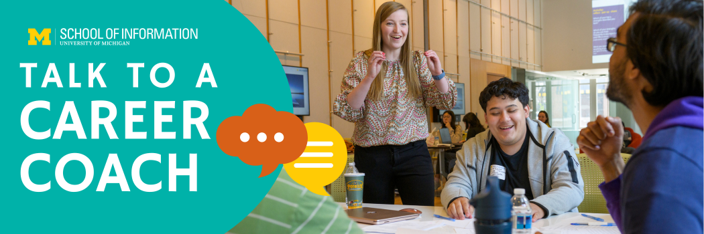

Talk to a Career Coach
Individualized Career Support
The Career Development Office (CDO) has a team of career coaches who work with students 1:1 to directly support students in achieving their career-related goals. This looks different from student to student and session to session. We use a coaching model centered around what the student individually needs at the moment.
Coaching sessions might be question-oriented, a review of best practices and resources, a review of documents' content, reflection on well-being in the job search, and practice.
For help navigating scheduling an appointment, visit this 1:1 sign-up help document
Peer Career Coaches
The CDO also hires and trains a team of Peer Career Coaches to meet with BSI and master's students at UMSI. This is a valuable opportunity to receive peer coaching from students who have successfully gone through the internship/job search process. These students have applied their UMSI knowledge to diverse roles and industries.
Coaching Appointment Options
Schedule a 1:1 Appointment
1:1 appointments with a coach are an opportunity to ask questions, explore resources, review materials, and practice topic areas.
Attend Drop-in Hours
Drop-in hours are for quick (10 min or less) career-related questions. These questions might relate to your resume, using CareerLink, setting a goal for your job/internship search, getting LinkedIn tips, etc. No reservation is required!
Join the Drop-In Queue- Check out this handout for support on joining the virtual drop-in queue
- Learn more about using Remote Office Hours Queue as an attendee
- Find current drop-in offerings in CareerLink events
Note: Students will be seen on a first-come, first-served basis. We cannot always guarantee you will see a coach during peak times.
If you have an immediate need, please email umsi.careers@umich.edu or umsi.internships@umich.edu and/or join the queue at the next available window.
Preparing for a Coaching Session
Career coaching is a collaborative process that empowers students with the knowledge and confidence to take the next steps in their career journey. Appointments are tailored to address your individualized career goals and the challenges you're facing.
Students play an active role throughout the process, engaging in self-reflection, asking questions, brainstorming possible solutions, and implementing the action plans co-created with your career coach. Through career coaching, coaches will challenge students, provide a safe space to try new things, and be by students' side to celebrate their success.
How to Prepare
- Pause & reflect on your goals - Where are you in the process?
- Be timely - Think about what your most pressing concern is
- Be honest - What are you worried or anxious about?
- Define your objectives - Try to name the priority items and what you need help on
- If you're unsure, that's okay — coaches will help you figure it out
- Mentally prepare for feedback and questions
Tips for Success in Career Coaching
- Bring a growth mindset & anticipate being challenged to grow
- Prepare to be vulnerable
- Brainstorm questions or concerns ahead of time
- Bring any materials you want reviewed (resume, cover letter, etc.)
- Document in your preferred way — notes, project tools, etc.
- Follow up on action items and schedule additional sessions (or attend drop-ins)